|
|
|
Red
scaly sea star
Nepanthia belcheri
Family
Asterinidae
updated
Jul 2020
Where
seen? This small sea star is sometimes seen on undisturbed
Northern shores on sandy areas near seagrasses and on rubble. It has also been seen on Cyrene. It appears
to be seasonal. Usually seen alone. According to Lane it was first seen in Singapore in the 1930s and
rediscovered in 1991. According to Marsh and Fromont, it is found clinging to the underside of boulders on muddy sand and rock substrate in Australia.
Features: Diameter with arms 5-7cm. A rounded star (not
flat) with long plump arms like half a cylinder with a flat base and
rounded tips. It usually has five arms, but some with four and six
arms have been seen. The
upper side is covered with 'scales'. When submerged tiny transparent
finger-like structures (papulae) might be seen on the upperside giving
the sea star a fuzzy appearance. Colours vary from red, maroon, purple, brown with mottled, irregular
patterns that blend well with the surroundings. The underside is pale, with orange or red grooves where the tube feet
emerge. The transparent tube feet are tipped with suckers.
What does it eat? According to Marsh and Fromont, it eats sponges, hydroids, soft corals and detritus. |
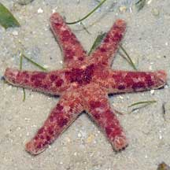
Cyrene Reef, May 08 |
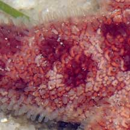
Upperside with 'scales' and papulae. |
|
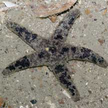
Beting Bronok, Aug 05 |
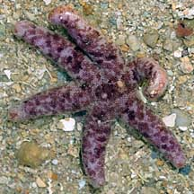
Cyrene Reef, Jul 08 |
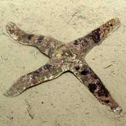
Beting Bronok, Aug 05 |
| Red
scaly sea stars on Singapore shores |
| Other sightings on Singapore shores |
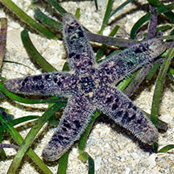
Chek Jawa, May 25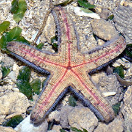
Photo
shared by Loh Kok Sheng on facebook. |
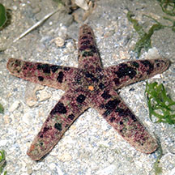
Chek Jawa, Aug 20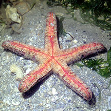
Photo shared by Jianlin Liu on facebook. |
|
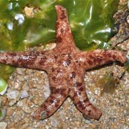
Pulau Sekudu,
Apr 09 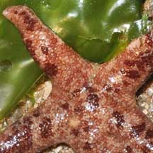
Photo
shared by Toh Chay Hoon on her
blog. |
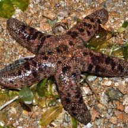
Pulau Sekudu,
Apr 09 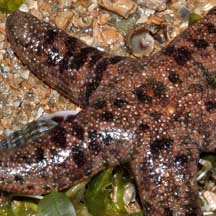
Photo
shared by Toh Chay Hoon on her
blog. |
|
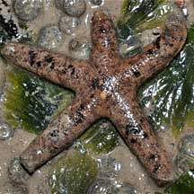
Beting Bronok, Jun 10
Photo shared by Toh Chay Hoon on her
blog. |
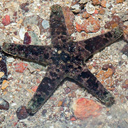
Beting Bronok, Jun 17
Photo shared by Marcus Ng on facebook. |
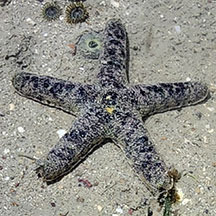
Beting Bronok, Jul 23
Photo shared by Che Cheng Neo on facebook. |
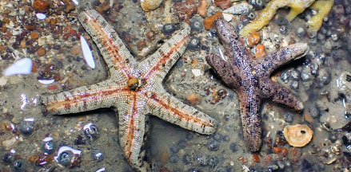
Beting Bronok, Jun 25
Photo shared by Vincent Choo on facebook. |
|
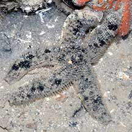
Beting Bronok, Jul 22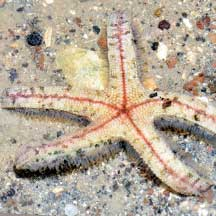
Photo
shared by Loh Kok Sheng on facebook. |
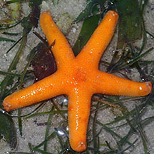
Cyrene, Aug 17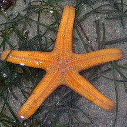
Photo
shared by Toh Chay Hoon on facebook. |
|
References
- Loisette M. Marsh and Jane Fromont. Field Guide to Shallow Water Seastars of Australia. 2020. Western Australian Museum. 543pp.
- Lane, David
J.W. and Didier Vandenspiegel. 2003. A
Guide to Sea Stars and Other Echinoderms of Singapore.
Singapore Science Centre. 187pp.
- Didier VandenSpiegel
et al. 1998. The
Asteroid fauna (Echinodermata) of Singapore with a distribution
table and illustrated identification to the species. The Raffles
Bulletin of Zoology 1998 46(2): 431-470.
|
|
|